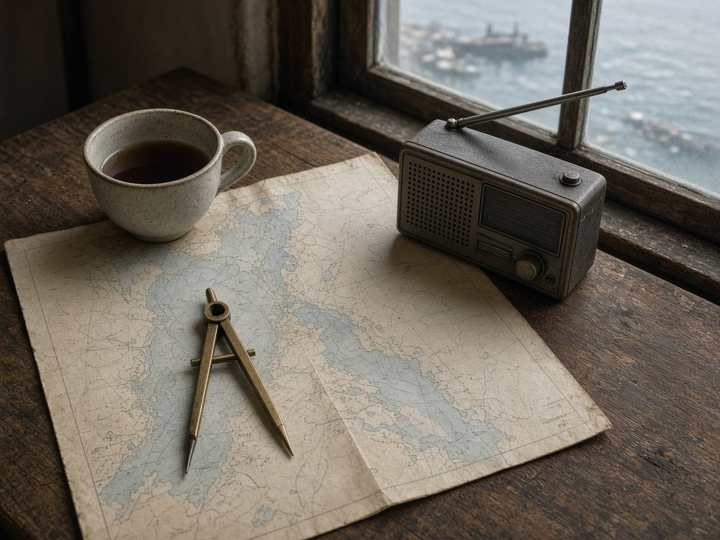

01
Harbor
A calmer operating board for berth assignment and shift handover.

North Sea Dispatch · 2025
Harbor
A calmer operating board for berth assignment and shift handover.
- Role
- Lead product design
- Timeline
- 11 months
- Practice
- Product
41%Fewer missed berths
6 minShift handover
4Night shifts shadowed
Problem
Dispatchers ran three radios, a spreadsheet, and a wall of paper slips. Handover between shifts dropped berth assignments, especially after midnight when the tide window was short.
Approach
I sat four night shifts before opening Figma. The board became a single tide-aware timeline. Paper slips turned into durable cards with a drag language the crew already used on the wall. Radio traffic stayed; the screen stopped competing with it.
Outcome
Shift handover fell from 18 minutes to 6. Missed berths dropped 41% in the first season. The night crew asked to keep a paper backup, so the printout shipped as part of the product, not a workaround.